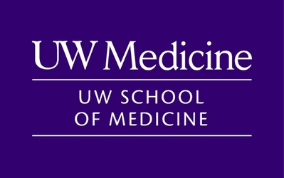
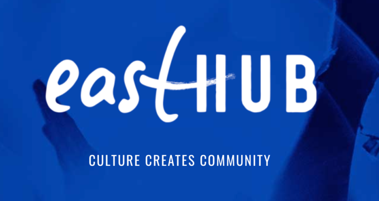
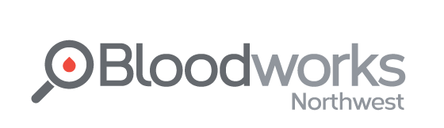
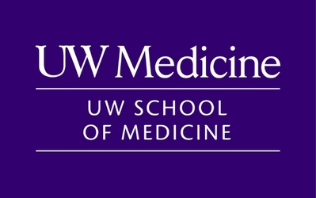
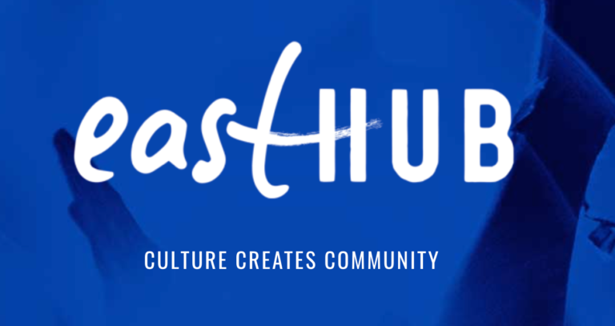
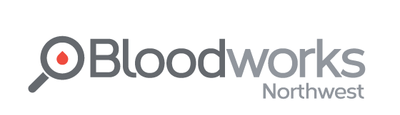

.png) 






AN APPLIED DATA ANALYST WELL-VERSED IN UI/UX STRATEGY, NOW PURSUING QUANTITATIVE ECONOMICS AT STANFORD.
I am from a small suburban city outside Seattle where I attended Interlake High School. From the age of nine, I began learning how to create visual art, which taught me the subjective nature of design in understanding both myself and others. My creative foundation led me to urban planning & development - from innovating physical design products and digital platforms to optimize urban transitions into local architecture to analyzing data to assess the impact of policies on target populations.
For the next few years, I continued conducting research projects that revolve around economic and political development, understanding the catalysts behind trends to develop scalable solutions that addressed both individual and organizational challenges. The hybrid of collecting and understanding data whilst independently creating solutions became my passion, drawing me towards the creation of authentic "user experiences" and a sharp understanding of B2C dynamics.
Now, I study Economics at Stanford University and am the founder of Artellect Co., where we are trying to uncover the roots of customer trust and loyalty, redefining corporate art as leverage for companies to better connect with their customers through a nostalgic and youthful brand image. I'm always open to connecting—feel free to reach out!